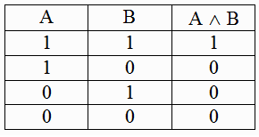
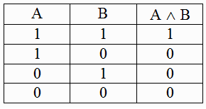
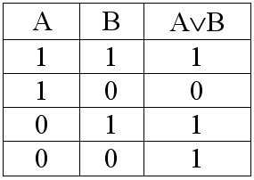
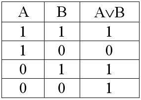
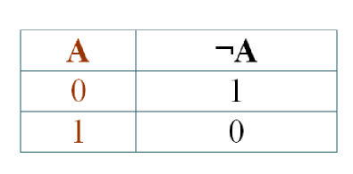

ЛОГИЧЕСКИЕ ОПЕРАЦИИ.
Теория:
Сложные (составные) высказывания строятся из простых с помощью логических операций. Рассмотрим основные логические операции, определённые над высказываниями. Все они соответствуют связкам, употребляемым в естественном языке.| Название логической операции | Логическая связка |
| Инверсия | «не»; «неверно, что» |
| Конъюнкция | «и»; «а»; «но»; «хотя» |
| Дизъюнкция | «или» |
Рассмотрим два высказывания:
A = «Основоположником алгебры логики является Джордж Буль»,
B = «Исследования Клода Шеннона позволили применить алгебру логики в вычислительной технике».
Очевидно, новое высказывание «Основоположником алгебры логики является Джордж Буль, и исследования Клода Шеннона позволили применить алгебру логики в вычислительной технике» истинно только в том случае, когда одновременно истинны оба исходных высказывания.
Для записи конъюнкции используются следующие знаки:

Конъюнкцию также называют логическим умножением.
A = «Основоположником алгебры логики является Джордж Буль»,
B = «Исследования Клода Шеннона позволили применить алгебру логики в вычислительной технике».
Очевидно, новое высказывание «Основоположником алгебры логики является Джордж Буль, и исследования Клода Шеннона позволили применить алгебру логики в вычислительной технике» истинно только в том случае, когда одновременно истинны оба исходных высказывания.
Конъюнкция
— логическая операция, ставящая в соответствие каждым двум высказываниям новое высказывание, являющееся истинным тогда и только тогда, когда оба исходных высказывания истинны.Для записи конъюнкции используются следующие знаки:
И,ˆ,⋅,&.
Например:A И B,AˆB,A⋅B,A&B.
Конъюнкцию определяется следующей таблицей истинности:
Конъюнкцию также называют логическим умножением.
Рассмотрим два высказывания:
A = «Идея использования в логике математической символики принадлежит Готфриду Вильгельму Лейбницу», B = «Лейбниц является основоположником бинарной арифметики».
Очевидно, новое высказывание «Идея использования в логике математической символики принадлежит Готфриду Вильгельму Лейбницу или Лейбниц является основоположником бинарной арифметики» ложно только в том случае, когда одновременно ложны оба исходных высказывания.
Для записи дизъюнкции используются следующие знаки:

Дизъюнкцию также называют логическим сложением.
A = «Идея использования в логике математической символики принадлежит Готфриду Вильгельму Лейбницу», B = «Лейбниц является основоположником бинарной арифметики».
Очевидно, новое высказывание «Идея использования в логике математической символики принадлежит Готфриду Вильгельму Лейбницу или Лейбниц является основоположником бинарной арифметики» ложно только в том случае, когда одновременно ложны оба исходных высказывания.
Дизъюнкция
— логическая операция, которая каждым двум высказываниям ставит в соответствие новое высказывание, являющееся ложным тогда и только тогда, когда оба исходных высказывания ложны.Для записи дизъюнкции используются следующие знаки:
ИЛИ;∨;|;+.
Например:A ИЛИ B;A∨B;A|B;A+B.
Дизъюнкция определяется следующей таблицей истинности:
Дизъюнкцию также называют логическим сложением.
Инверсия
— логическая операция, которая каждому высказыванию ставит в соответствие новое высказывание, значение которого противоположно исходному.Для записи инверсии используются следующие знаки:
НЕ;¬;
Инверсия определяется следующей таблицей истинности: Инверсию также называют логическим отрицанием.
Отрицанием высказывания «У меня дома есть компьютер» будет высказывание «Неверно, что у меня дома есть компьютер» или, что в русском языке то же самое, что «У меня дома нет компьютера».
Отрицанием высказывания «Я не знаю китайский язык» будет высказывание «Неверно, что я не знаю китайский язык» или, что в русском языке: «Я знаю китайский язык».
Любое сложное высказывание можно записать и виде логического выражения — выражения, содержащего логические переменные, знаки логических операций и скобки.
Логические операции в логическом выражении выполняются в следующей очерёдности: инверсия, конъюнкция, дизъюнкция.
Изменить порядок выполнения операций можно с помощью расстановки скобок.
Логические операции при выполнении имеют следующий приоритет: инверсия, конъюнкция, дизъюнкция.